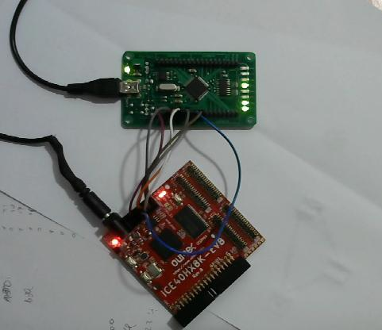

Flashing ice40hx8k-evb Open Source FPGA with an ft2232h
04 June 2020
Hi!
Recently I had to flash a test program in my ice40hx8k-evb[1]
board.
This PGA has the killer feature of being completely programmable
without proprietary tools[2] and to be a fully open source
design, unlike almost all competitors'
products. Futhermore this FPGA is sold to the customer market at low
price making it a perfect target for the maker community.
One of the downsides of this FPGA is the lack of high speed clocks[3]
and the limited number of available LUTs (1K or 8K).
Structure of the ice40 FPGA Evaluation board
This board is composed of the base FPGA chip (cn256) and a reference quartz oscillator at 100MHz.The cn256 model of the FPGA has a configurable PLL onboard, this device can multiply the frequency of our input clock to achieve higher frequencies, ice40hx8k's PLL can lock to frequency 64 times higher than the input frequency (but be aware that the FPGA internal circuitery cannot handle such high frequencies!).
This will enable us to use high speed clocks starting with a slower (and precise) clock source.
Programming the FPGA
The interactions with the FPGA are not handled by any operating system. You'll need a direct interaction with the storage medium of the FPGA to write the bitstream.We will need some hardware and software for this task, my current lab setup is composed of:
Hardware:
- 1 x ICE40HX8K-EVB FPGA
- 1 x SPI interface. I have a ft2232h breakout board, it can be an iceduino, raspberry pi or a buspirate.
- 1 x USB power supply, I have a power supply which provides 2400mA.
- 1 x Homemade cable to power up the FPGA using an USB power supply.
- 6 x dupont cable female to female (you may need some other gender combinations depending on your SPI interface). Preferably <= 10cm of length.
Software:
- Icestorm[2]: to program the FPGA.
- Yosys[4]: to syntetize the verilog program.
- nextpnr[5]: to perform the place and route.
ft2232h
The ft2232h is a USB to serial protocol interface, is capable of interface USB bus to SPI, JTAG, UART, I2C and bit-banging other protocols. It is fully compatible with OpenOCD[6] and Flashrom[7] thus enabling the flashing of the bitstream on the on-board E²PROM.Drivers for this kind of chips are shipped in every modern pre-compiled kernel for common distributions (Arch Linux, Debian, Ubuntu).
icestorm
Icestorm is an open source (GPL) toolchain for ice40 FPGAs. It can be used to program and read flash chips. It is fully compatible with ft2232h (Clifford Wolf developed the tool for this platform). To compile icestorm you should follow this steps:
$ git clone https://github.com/cliffordwolf/icestorm
$ cd icestorm
$ make
# make install
Looking in the code of icestorm we can see that the pinout for bit-banging the
flash is a little different from the datasheet of the ft2232h:
From https://github.com/cliffordwolf/icestorm/blob/master/iceprog/mpsse.c
/* FTDI bank pinout typically used for iCE dev boards
* BUS IO | Signal | Control
* -------+--------+--------------
* xDBUS0 | SCK | MPSSE
* xDBUS1 | MOSI | MPSSE
* xDBUS2 | MISO | MPSSE
* xDBUS3 | nc |
* xDBUS4 | CS | GPIO
* xDBUS5 | nc |
* xDBUS6 | CDONE | GPIO
* xDBUS7 | CRESET | GPIO
*/
Using this pinout we can connect the FPGA pins to our FT2232H chip.
Keep in mind that GND should be connected and 3.3V pin _must_ be left
floating.
Looking from the component side you should see this connector:
ICE40
│
│ PCB
│ ┌──┐
│ SSB │··│ SCK
│ SDO │··│ SDI
│CRST │·· CDONE
│ TXD │··│ RXD
│ GND │··│ 3.3V
│ └──┘
│ Power
│ Jack
└─────────────────
Connect to the correct pins of your FT2232H board, and then
you should have a result similar to this one:
In this image you can see:
- My ice40hx8k (the red board)
- My homemade power cable, it simply connects power lines of an USB cable to a power jack connector.
- My ft2232h breakout board (the green one)
Power up the FPGA and the programmer, press and keep the reset button, launch
# iceprog -t to identify the flash and you should see some binary
garbage different from 0xff and 0x00.If you experience some difficulties try to slow down the clock using
# iceprog -t -s and append the -s switch to every
iceprog command.If this, again, fails, try to use shorter wires, the connections shall be < ~15cm.
Our first flash interaction
After checking the connection between the FPGA and the programmer you can try to retrive the running bitstream, using# iceprog -r /tmp/flash-content.bin, after some time you will receive
a binary file. As a rule of thumb you can try to read some strings
present in the bitstream using strings:
$ strings /tmp/flash-content.bin
Lattice
iCEcube2 2015.04.27409
Part: iCE40HX8K-CT256
Date: Jun 29 2017 09:22:59
Bx08
$ sha512sum /vagrant/read*
dd2f1c3f0a7f6868da8cad82860a40738...
026d7a6114558efda981c50308737bb71...
dd2f1c3f0a7f6868da8cad82860a40738...
As you can see the first read and the third read lead us to the same file, in the second read we had some reading problems.
Blinking leds
To syntetize and compile our first program we need the syntesizer program and the place and route tool. In the open source toolchain this tools are called respectively:yosys and
next-pnr.
This tools are the basis for the compilation of FPGA bitstreams.
Our first project will be the blinking leds demo available at the end of this
page[8] With this test you can see the led working and check if your programming setup is done well.
As you can see, the program is in VHDL, not in Verilog, to transpile the unsupported language in Verilog a tool called vhd2vl[9] is employied.
As described in the previous section, you can flash the generated bitstream in your FPGA using
# iceprog ./led.binHave fun with your open source FPGA! :)
If you have some question send me an e-mail or a Telegram message, you can find the addresses in the home page!
Bye,
D.
[1] Ice40hx8k-evb Olimex product page
[2] Project icestorm homepage
[3] Lattice semiconductor datasheet for ice40 series [4] Github link of yosys
[5] Github link of nextpnr
[6] OpenOCD, On Computer Debugger, home page
[7] Flashrom homepage
[8] The program, in VHDL, can be found here
[9] Github link of vhd2vl